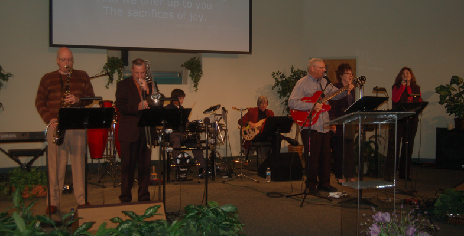

Poinciana Christian Church
Our Ministries!
Poinciana Christian Church offers its members many opportunities to Believe, Belong and Become a Servant of God through its various ministries.
Small Groups
Poinciana Christian Church offers Small Groups to be a place for people to build relationships and do life together through Bible Study, Prayer, Fellowship, and Service. It is our purpose that Small Group participants not only grow in their relationships with people, but they also grow in their relationship with Christ. Please feel free to Contact Us for more information!
The youth group at Poinciana Christian Church exists for several reasons. The first and foremost is to glorify God and worship him above all else. We also want to a welcoming and inviting place for those that don’t already have a relationship with Jesus Christ.We welcome all students to come and check us out at any of our events or programs to see what we are all about. If you have any questions or would like to chat feel free to contact our church office.
Our children's ministry team exists to nurture faith in the God of the Bible in the hearts and minds of children from 3 years of age through the fifth grade. We try to accomplish this through effective biblical teaching and through loving relationships. Our team has a lot of fun with the children under our care, and we especially enjoy teaching them about Jesus. Our team consists of dedicated teachers and assistants who love God and who love children. We offer the following classes on Sunday mornings during both the 9:00 & 10:30 worship services as well as on Wednesday evenings (7:00-8:00) during the adult Bible study: Pre-K (3-5 years ), K & 1st grade, 2nd & 3rd grades, and 4th & 5th grades. To enhance the safety of your child, please escort your child to his/her classroom. Please sign your child in on the form located outside the classroom and include your child’s ID #. Should we need to summon you during the service your child’s ID # will flash on the pagers in the auditorium. Please return promptly to your child’s classroom following the service. Your child will be released to an authorized person with a valid ID card or visitor badge. If you have any questions, please refer to the classroom security policy posted outside the classrooms, nursery and Welcome Center.
Thank you for your cooperation in ensuring the safety of your child.
Worship Ministry
The purpose of this ministry is to lead the local Body of Christ in a dynamic, corporate expression of praise and worship to the God of the Bible, using vocal and instrumental music (Psalm 98:4-6; 33:1-3).
The purpose of worship is to bring pleasure to God; to glorify and please Him. And, to bring transformation to our lives.
Transformation is part of the purpose and result of worship. Worship is not something done to us or for us, but by us. Those leading worship must seek to focus the attention on the wonderful God of mercy and grace. To truely lead worship, one must have not only musical ability, but also a worshipping heart. Worship is a lifestyle. Our personal worship of the Lord affects everything we do and everything we are. Leading corporate worship cannot be left to our personal feelings. We must always put ourselves aside and be willing to offer a "sacrifice of praise" (Hebrews 13:5). One of the greatest discoveries of our Christian life comes as we begin to understand what God can do, and does do, as experience His presence in worship.
Those interested in this ministry must first make an appointment with the worship minister for an interview, and schedule a time for an audition to determine how they will fit with the team.